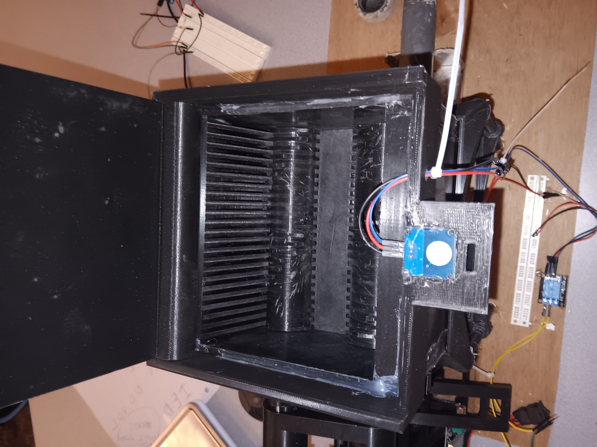

Objective
Leverage my manufacturing experience and aerospace knowledge to provide value to a company through the completion of a challenging internship.
Engineering Projects
Marine Hydrofoil Optimization & Composite Fabrication
Shipwright - Khura Buri, Thailand
- Composite Manufacturing: Utilized hand lay-up techniques with carbon fiber and epoxy, reinforced with a surface layer of Kevlar for impact resistance.
- Design Methodology: Dimensioned foils using the Lift equation and planform area calculations to optimize vessel performance.
- Sea Trial Validation: Conducted trials in the Andaman Sea to validate lift onset and stability within a target speed band of ~20 kn, assessing ventilation margins and handling in real chop.
$$L = \frac{1}{2} \rho v^2 A C_L$$

Prototype assembly and structural testing setup.
Fluid DynamicsHand Lay-upCarbon Fiber/KevlarSea Trials
Magnetic Levitation Prosthetic Interface
Inventors Studio II (ISYE 4600-01) - RPI
- Mechatronic Design: Developed a magnetic levitation system to eliminate skin irritation by creating a contact-free interface for amputees.
- Finite Element Analysis (FEA): Performed simulation on NX CAD software to evaluate structural durability. Simulated forces from 500N to 4500N to determine deformation thresholds.
- Validated Results: Confirmed design can withstand up to 2400N of force, ensuring safety for daily activities.

FEA displacement analysis on NX CAD showing stress distribution under 2400N load.

Custom-designed control board for electromagnetic stabilization.
NX CADFEA SimulationMechatronicsPCB Design
PLA Recycling System: Grinder Subsystem
RPI - Introduction to Engineering Design
- Safety Logic: Engineered a grinder subsystem featuring a contact sensor with a metal pin at the lid tip to prevent operation while open.
- Automation: System activates motor rotation only when sealed shut, ensuring material is safely ground and deposited into the hopper.
- Collaboration: Worked within a five-student team to budget and fabricate the full prototype.
Functional test of safety contact sensor and motor activation.

Internal grinder blade geometry and sensor placement.
System SafetyAutomationRapid Prototyping
Professional Experience
Oct-Dec 2024
Shipwright
Khura Buri, Thailand
- Led construction and navigation of a sailboat on the Andaman Sea.
- Identified critical construction flaws in a 15-meter catamaran restoration.
Technical Skills
NX CAD (FEA)ManufacturingPython
MATLABAutodesk FusionNumerical Methods